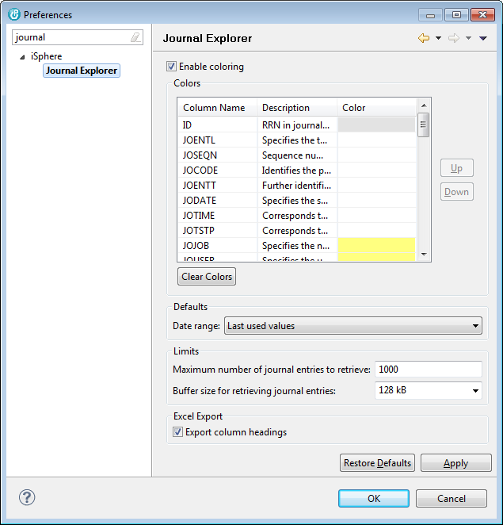

Preferences

The available options are:
Enable coloring
-
This option will enable or disable column colors at all.
Up
-
Moves the selected entry one position up.
Down
-
Moves the selected entry one position down.
Clear Colors
-
Removes all colors.